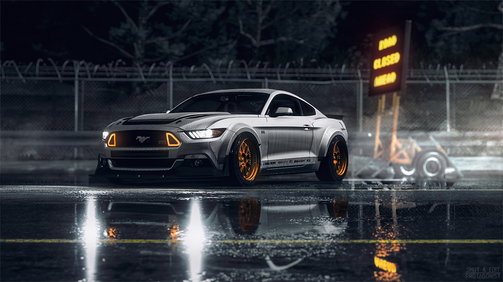
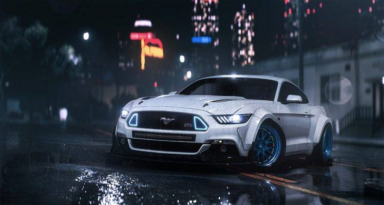

El equipo fue formado por Ken Block a principios de 2010 como una plataforma para que él pudiera competir a nivel de campeonato mundial. El equipo, patrocinado por Monster Energy, dirigió un Ford Focus RS WRC 2011 para el y su copiloto Alex Gelsomino en los eventos seleccionados en el Campeonato Mundial de Rally. En 2012, el equipo entró en un segundo coche para el piloto australiano Chris Atkinson en el Rally de México, su ultima participación fue en el Rally México 2013 donde Block logró su mejor participación en el WRC al terminar séptimo, esta ocasión fue la primera vez que el equipo corrió como el Hoonigan Racing Division. En el Global RallyCross Championship, Block terminó 5º en 2012, 3º en 2013, 2º en 2014 y 7º en 2015. Block también consiguió un tercer puesto en Noruega y un cuarto en Francia en el Campeonato Mundial de Rallycross en 2014. En 2016, Block competió a tiempo completo en el Campeonato Mundial de Rallycross de la FIA junto a Andreas Bakkerud, conduciendo el nuevo Ford Focus RS. El coche fue construido y preparado por M-Sport,1 un equipo británico de automovilismo, que también construye y prepara los coches para cada equipo del rally y varios equipos del rallycross que compiten con el modelo del Fiesta. El Hoonigan Racing Division (previamente conocido como el Monster World Rally Team) es un equipo americano de carreras de autos. El equipo compite en el Campeonato Mundial de Rallycross de la FIA desde 2014 previamente compitió en el World Rally Championship, en el FIA European Rallycross Championship y en el Global RallyCross Championship.
 